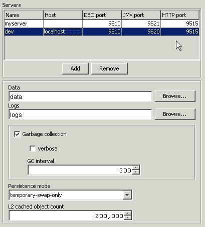

Each Terracotta server requires certain information to run,
primarily related to the ports upon which its various services
should listen. To specify this information, double-click on the name
of your configuration file in the Eclipse workspace view to display
The Configuration Editor. This editor is composed of a set of tabbed
pages, each related to different aspects of the configuration. For a
detailed description of the pages that make up this editor refer
to Configuring Your
Terracotta Project. The remainder of this document describes
the Server config page.

The Server config page displays a list of the server elements and their attributes. You can add any number of server configurations by clicking the Add button and remove the selected server element by clicking then Remove button. When a server element is selected, it associated attributes are displayed in the form below the list.
A server has a name, an optional host upon which it will be run, and a set of ports for use by its various services.
Each server must specify a unique set of ports upon which its various services will listen. For a detailed description of the ports required by the Terracotta server refer to Specifying the Server Ports.
The Terracotta server writes messages of varying degrees of importance to its log file. For a detailed description of the server log file refer to Specifying the Server Logs.
The Terracotta server maintains a database that contains copies of DSO objects not currently contained in the in-memory cache. The default location of this database is the terracotta folder located at the root of your project workspace. For a detailed description of the Data storage area refer to Specifying the Server Database Location.
The Terracotta server can be configured to free unused DSO object at a specified interval. For a detailed description of the garbage collection feature refer to Enabling Server Garbage-collection.
The Terracotta server can operate in a limited memory environment wherein the size of the set of DSO objects that are kept in memory can be specified, and the rest are stored in a disk-based cache. For a detailed description of the in-memory cache refer to Limiting Server Memory Usage.